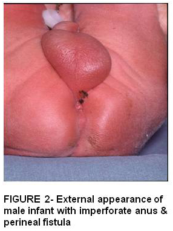
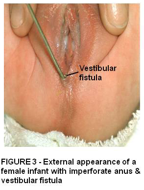
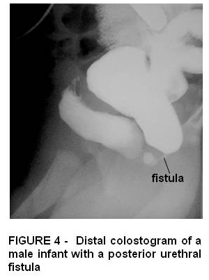
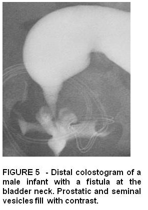
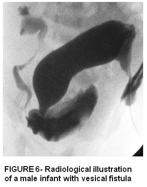
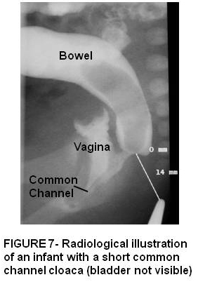
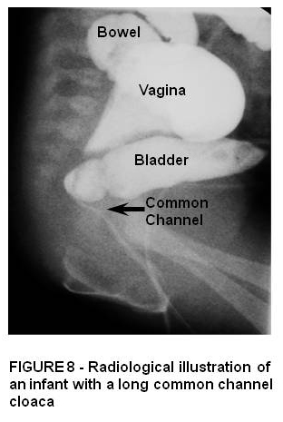
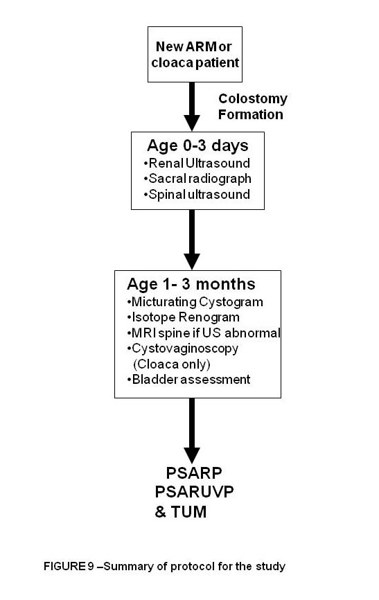

.
However it is now reported that the mesenchyme between the hindgut and the developing bladder appears to approach the cloacal plate but what was previously thought to be the urorectal septum is created by the changes in relative size and position of the mesnechymal structures surrounding the cloaca as they grow 20-22. By the sixth week the cloaca is divided resulting in a urogenital sinus anteriorly and a separate hindgut posteriorly. The mesonephric ducts join the cloaca laterally. They give rise to the developing ureteric bud, which in turn induces kidney development from the metanephric blastema 16. The urethra subsequently develops from the caudal end of the urogenital sinus after it’s separation from the cloaca 23.
Anorectal malformations and persistent cloaca may be due to arrest of division of the cloaca by mesechymal growth and may occur at any stage in this process leading to a wide spectrum of anorectal malformations 16,17. The intimate association of embryological development of anorectal, genital and urinary systems also explains the frequency with which simultaneous associated malformations in these systems occur 4,15. As molecular biology delivers more insights into the molecular triggers to development more will be learned about the pathogenesis of ARM 20.
AETIOLOGY & GENETICS
The cause of ARM is unknown. The molecular determinants during blastogenesis are overlapping for many body systems so defects often involve two or more progenitor fields 24. Sporadic ARM has been reported but it is more commonly found associated with other systemic malformations 25. The genetics are complex as ARM phenotypes result from multiple different genes 26. It may be that similar embryonic events that produce oesophageal atresia are responsible for the ARM. In a mouse model the SHH sonic hedgehog gene shows a relationship to both upper and lower GI anomalies 27,28.
ARM has been described in patients with chromosomal abnormalities such as Down syndrome, trisomy 18, cat’s eye syndrome 13q. Cuschieri reported that chromosomal abnormalities were found in 11% of a large series of European infants with ARM. The frequencies of trisomy 21, 13 and 18 among this group of infants was 15, 30, 90 times higher than the general population 29. The teratogenic effect of chemicals such as thalidomide, oestrogen and ethanol has also been described 30.
Genetic syndromes - Many syndromes have been described with ARM as a feature. VACTERL, caudal regression and Currarino syndromes will be outlined below but others such as CHARGE, Goldehhaar, Renal-ear-anal-radial, Pallister Hall, Opitz , and Cat’s eye syndrome have also been well described 30.
The VATER syndrome was first described by Quan and occurs in 1 in 5,000-10,000 livebirths and appears to represent a field defect 8. VACTERL is an acronym for vertebral anomalies, anorectal malformation, cardiac anomalies, tracheoesophageal fistula, renal anomalies and limb anomalies. Almost all cases of VACTERL are sporadic so the recurrence risk for families is minimal. However in VACTERL patients with hydrocephalus a mutation with PTEN gene has been reported 31.
Caudal Regression syndrome
This syndrome results from failure of formation of part or all of the coccygeal, sacral, and occasionally lumbar vertebral units and the corresponding segments of the caudal spinal cord. It is commonly associated with ARM (27-48%) and genitourinary anomalies 32. Most cases of Caudal regression syndrome are sporadic. However CRS occurs in 1% of pregnancies of diabetic women and 22% of CRS patients have a history of maternal diabetes during pregnancy. Mothers with insulin dependent diabetes are 200-400 times more likely to have a child with CRS than a normal woman. 30,33
Currarino Syndrome
This triad was first described as ARM with hemi sacrum and pre-sacral mass 34. Currarino syndrome can be sporadic with autosomal dominant mode of inheritance and with variable penetrance 30. The HLXB9 gene on 7q39 has been identified by linkage analysis as the causative gene 35.
CLASSIFICATION OF ANORECTAL & CLOACAL
MALFORMATIONS
The term anorectal malformation has come to represent a broad spectrum of abnormalities involving the termination of the hindgut. Paediatric surgeons and anatomists have tried to classify anorectal malformations in a rational way 36. The terms “high” and “low” have been the most widely accepted concept. The International classification 37 and Wingspread classification 38 proposed “high”, “intermediate” and “low” to classify ARM patients whereas Pena classifies the condition according to the site of fistula, degree of caudal regression and therefore prognostic outcome 39 (Table below )
MALE |
FEMALE |
Rectovesical fistula (bladder neck) |
Cloaca > 3cm common channel
< 3cm common channel |
Rectourethral fistula (prostatic) |
Rectourethral fistula (bulbar) |
Rectovestibular fistula |
Rectal atresia |
Rectal atresia |
Imperforate anus no fistula |
Imperforate anus no fistula |
Perineal fistula |
Perineal fistula |
Perineal fistulas have traditionally been called low defects in boys and girls where the rectum opens in a small stenotic orifice always anterior to the centre of the anal sphincter.
Figure 2

Rectovestibular fistula is the most common defect seen in girls where the rectum opens in the vestibule, which is the space between the hymen and the perineal skin. Most have a good sacrum and anal sphincteric mechanism.

Rectourethral fistula is the most common defect in males. There are 2 types : bulbar where the urethra opens in the lower posterior (bulbar) urethra and prostatic fistula opens higher within the prostatic urethra. The latter has a higher incidence of sacral dysplasia and poor anal sphincter muscle.

Rectovesical or rectobladder neck is the highest or most severe defect in males where most patients have a sacral dysplasia, abnormal pelvic floor musclature and anal sphincters. Surgical repair usually involves abdominal and posterior saggital approach.

Imperforate anus without fistula is rare with the rectum located usually 2 cm above the perineal skin. These patients usually have a good sacrum and good anal sphincter muscles.
Cloaca is the most severe end of the spectrum of anorectal malformations in females where urinary, genital and rectum all drain via a common channel and single perineal opening. There is a high incidence of associated sacral and urinary tract defects. Those with a short common channel < 3 cm can be repaired by posterior saggital approach. However those with a long common cloacal channel represent a more complex defect which will usually require combined abdominal and posterior saggital approach.

ASSOCIATED CONGENITAL ANOMALIES
The incidence of associated anomalies in ARM patients may be as high as 60% with the genitourinary tract and spine being most frequently affected 6, 15, 40-45.
VERTEBRAL AND SPINAL ABNORMALITIES
A wide spectrum of lower lumbar and sacral spine abnormalities which range from mild hyoplasia to complete absence of vertebrae are found in patients with anorectal malformation 46,47. The occurrence of spinal, genitourinary and anorectal defects together represents a regional defect or caudal regression syndrome. These anomalies occur in a random pattern and in different degrees of severity 42,48.
Generalised sacral hypoplasia, especially if mild may go unnoticed 46 as the sacral defect produces little external deformity. The only visible physical signs are flattening and asymmetry of the buttocks and poor development of the natal cleft 49. There is usually no sensory defect and impaired motor function is limited to the pelvic floor muscles. Later in life bladder and bowel dysfunction may be the only sign of an underlying problem but this may be undetected and therefore untreated in the preschool child. In patients with anorectal malformation the presence of a sacral abnormality also affects the functional outcome for faecal continence 1. Those patients with sacral hypoplasia, hemivertebrae or fused vertebrae have a much poorer outcome than those with a normal sacrum 36, 50. Pena proposed use of the sacral ratio (sacral length in relation to fixed bony landmarks) as a simple method to assess the sacrum although this method was untested in the normal population.
The neurological deficits in ARM patients have been thought to result from defective sacral nerve root development. Many investigators have noted a high prevalence of spinal cord anomalies when there is radiographic evidence of a sacral abnormality 47,51,52. In infants under 3 months of age a spinal ultrasound scan is effective at asses gross spinal cord anomalies and is frequently used as a screening tool 53. The advent of Magnetic Resonance Imaging (MRI) has enabled non invasive evaluation of the spinal cord in this group of patients and incidences of spinal cord abnormality range from 24% 50 to 50% 54. The prevalence of spinal cord abnormalities was increased in the more severe ARMs and in those with urogenital abnormalities.
CARDIAC
Cardiovascular malformations occur in 12-22% of ARM patients 2, 29. The most common lesions are tetralogy of Fallot and ventricular septal defects. Transposition of the great arteries and hypoplastic left heart syndrome have been reported but are rare 29.
TOF/OESOPHGEAL ATRESIA
Many GI malformations have been described in association with imperforate anus. Up to 10% of patients have tracheoesophageal abnormalities 29. Duodenal obstruction due to annular pancreas or duodenal atresia occurs in a small percentage of patients. Malrotation with Ladd bands that causes obstruction has also been described. Hirschsprung disease has been well described in association with imperforate anus, although the incidence of this combined condition is unknown 29, 30.
GENITOURINARY TRACT
Genitourinary anomalies occur frequently in patients with ARM and previous retrospective reviews report incidences from 20 to 50% 1,6,15,41,42.The importance of investigating and treating the urinary tract in patients born with anorectal malformations has until recently been underemphasized 56. Overall, approximately 40% of patients have a urinary tract anomaly and 10% have a genital anomaly1,6,15, 44, 57. Table 2 below
Fistula level Associated genitourinary
FISTULA%
FISTULA LEVEL Associated genitourinary malformation %
Cloaca 88%
Bladder neck 92%
Prostatic urethra 66%
Bulbar urethra 25%
Vestibular 30%
No fistula 25%
Perineal 0%
Fistulas between the anorectum and urogenital tract are the most commonly encountered problem and occur in 95% of patients 1, 6. Most patients with a fistula require a diverting colostomy within the first few days of life prior to reconstructive surgery 58.Urinary tract abnormalities may significantly influence the clinical outcome of these patients 6,40. Abnormalities of the upper tracts may be responsible for primary renal impairment in patients with dysplasia or agenesis and secondary renal impairment can develop in patients with undetected abnormalities such as pelviureteric junction obstruction or vesicoureteric junction obstruction 57. In one large series from Toronto, 14% of ARM patients had bilateral renal abnormalities on presentation 6. Vesicoureteric reflux is a common problem in ARM patients and reflux nephropathy also represents a preventable cause of renal deterioration 57.
The incidence of urinary anomalies increases according to the severity of the ARM 10,44, 59. Rich and Pena noticed a close correlation between the level of the rectal fistula and the frequency and severity of the associated urological malformation 15. In high malformations such as cloaca and bladder neck fistula there was a 90% incidence of genitourinary abnormalities whereas there was a 14% incidence in low anomalies 57. It has also been suggested that those with a lumbosacral bony abnormality or a genital abnormality have an increased risk of associated renal abnormality 15, 44.
The mortality rate from renal insufficiency in ARM patients is 6% 6, so the importance of urological evaluation in all new ARM babies cannot be overemphasised. Common and preventable complications can then be avoided. Continued long-term follow-up is mandatory to monitor the upper tracts and also to exclude neurogenic bladder.
Genital abnormalities are very common in both male and female ARM patients. In one series 52% of boys had abnormalities of the genitalia including hypospadias, bifid scrotum, bilateral undescended testes, or penoscrotal transposition 6. The presence of a genital abnormality in boys with ARM appears to be associated with a renal abnormality. Cryptorchidism is a common finding and the incidence varies between 10 and 40% of male ARM patients 6,44,57. McLorie reports that this is more common in high versus low malformations (27% vs7%). A penile abnormality has been described in 14–25 % of male ARM patients 44,57. Hypospadias is the most common penile abnormality detected, but chordee, epispadias and penile duplication have also been reported in a few patients 44. A bifid scrotum commonly occurs and is oftenwith the more severe variants of hypospadias and penoscrotal transposition has also been described. 6
Mullerian abnormalities occur in 30–45 % of girls with ARM 55,60,61. Cloacal anomalies are characterized by a confluence of the urethra, vagina, and rectum into a single channel, or persistent cloaca with a solitary opening on the perineum 62. This anomaly occurs as a result of a complex defect of perineal development, and is associated with maldevelopment of the Mullerian tubercle, sinovaginal bulbs, vaginal plate, and urogenital sinus. The resulting abnormalities show great variation depending on whether the confluence is high or low 57,62. Some degree of septation of the uterus and vagina, ranging from a partial septum in a large vagina with single cervix and uterus to a completely separated double vagina with double cervix and uteri, is seen in 60% of cloaca patients 10,57,62,63. Abnormalities of the external genitalia are rare, but hamartomas and hemangiomas of the labia majora have both been observed.
TABLE 3 - Urological abnormalities diagnosed in 62 prospectively studied ARM patients
Urological Abnormality |
N |
% |
Renal dysplasia |
8 |
13% |
Solitary kidney |
4 |
6% |
Congenital hydronephrosis |
5 |
8% |
Duplex |
4 |
6% |
Horseshoe |
1 |
2% |
Multicystic dysplastic |
4 |
6% |
Cross fused ectopic |
1 |
2% |
Persistent urachus |
2 |
3% |
Vesico ureteric reflux |
16 |
26% |
Bladder atresia |
2 |
3% |
Posterior urethral valves |
1 |
2% |
SURGICAL RECONSTRUCTION OF ANORECTAL
& CLOACAL MALFORMATIONS
Reports of absent anus were documented in Greco-Roman times and Soranos of Ephesus was the first to describe finger disruption of an anal membrane 36. From the fifteen to eighteenth century numerous reports appeared and treatment involved blind perforation of the perineum with a trocar 64, 65. Bodenhamer in 1860 made a clear distinction between low (anal) and high (rectal) anomalies 65. In the late 19th century perineal and sacroperineal approaches were developed which involved anatomical dissection of the rectal pouch rather than blind puncture 66,67 and reduced surgical mortality from 90% to 40% in the early 20th century 68,69.
Cloacal malformations for many years were called imperforate anus with urogenital sinus 70. The patient therefore usually had surgical treatment for the imperforate anus and the urogenital sinus portion would not be dealt with until a later date. It is only within the past 30 years that the surgical treatment for cloaca has evolved and this coincided with a new understanding of anorectal malfomations and the development of new surgical techniques 71.
Historically the surgical approach to anorectal malformations was rather empirical. The low defects were treated by simple perineal operations however more complex high defects, where the rectum was more than 1 cm from the skin, most surgeons treated with an abdominoperineal repair pulling the rectum quite posterior in an attempt to avoid injury to urogenital structures 36. Stephens with his pioneering scientific study of these defects in the 1960s suggested it was important to preserve an important part of the levator muscle, the puborectalis 37, 69,, which involved placement of the rectum close to urethra and vagina and dissection via combined sacral and perineal approach. This procedure however involves a blind step which is usually related to a crucial area around the bladder neck, posterior urethra, seminal vesicles and vas. Considering that both posterior urethra and posterior vagina share a common wall with the rectum and it is difficult to separate one from the other, even under direct vision, this might explain some of the post-op complications encountered with this technique 68. The posterior saggital anorectoplasty (PSARP) 71,72 described by Pena and de Vries in 1982, allows the operating surgeon direct exposure to the anatomy of the anorectal malformation with excellent views of the fistula in most cases. This significantly lessens the risk of iatrogenic damage to important pelvic structures 10.
NEWBORN MANAGEMENT
When a new infant is born with ARM then clinical examination of the perineum yields important clues about the level of the management. Decisions can then be made regarding ongoing surgical management. It is important to wait 24 hours if possible before deciding whether a colostomy is necessary as it can take time for enough pressure to build up within the rectum and meconium to drain via a fistula. Meconium can drain directly onto perineum or via the urinary stream in infants with rectourinary tract fistula. Clinical examination also allows inspection of the cardiovascular system, spine and genitalia to detect associated anomalies.
In the first 48 hours it is usual for the child to be administered intravenous fluids and intravenous antibiotics. A nasogastric tube is essential to decompress the bowel and will also exclude the presence of oesophageal atresia. An echocardiogram is essential to detect structural cardiac defects before general anaesthesia. A plain radiograph especially in the lateral position is recommended by some authors to help determine the level of the defect 10. Ultrasound is a reliable and non invasive way to image the urinary tract and spine at a convenient time.
In infants with a perineal fistula it is common to perform an anoplasty in the first 48 hours of life 9,10. For the remainder of defects then a protective colostomy is fashioned to decompress the gut and definitive surgery can then be planned when the infant is older and anatomy of the defect confirmed. Some institutions may opt to perform a neonatal repair without colostomy but this is not recommended unless the surgeon has extensive experience in this field 9,10, 36.
A colostomy can be performed with low morbidity even in a sick or premature infant. A split or divided colostomy is preferred to a loop stoma as it prevents overspill of stool into the distal colon. Most surgeons place the stoma in proximal sigmoid or descending colon as this leaves adequate length of distal colon to for mobilisation of the rectum during the pull through procedure10, 36,58 Once the stoma is fashioned, the infant can feed normally and thrive. A distal colostogram can then be performed which is essential for detecting the level of the fistula to the urinary tract and planning the reconstructive surgery. A stoma also has the benefit of protecting the definitive repair until the area has healed. 10, 58
In girls with persistent cloaca it is useful to perform an endoscopy, at time of colostomy formation, to assess the internal anatomy and determine the length of the common cloacal channel. In some cloaca patients it may also be necessary to create more effective drainage of the urinary tract 73.
Figure 9 summarises treatment plan for a new ARM baby

DEFINITIVE SURGICAL REPAIR
Although many repairs have been described in the past, most surgeons now use the posterior saggital approach to repair anorectal malformations with or without laparotomy or laparoscopy. The repair is most commonly performed at around 2-4 months but this depends on local practice and clinical status of the infant.
THE POSTERIOR SAGGITAL ANORECTOPLASTY (PSARP)
The PSARP begins by opening the area between the mid sacrum and the external sphincter through a midline saggital incision with the patient in the prone position. The appropriate site for the anus is determined by an electrostimulator. All muscle structures are separated precisely in the midline. The bowel is mobilised, opened and the fistula identified. The fistula is then divided, tied off and the intestine meticulously separated from the urinary tract or vagina. The surgeon must then dissect the bowel to gain enough length to suture it to the skin. The saggitally split muscle complex including levator and the external sphincter are then re-approximated dorsal to the bowel and the muscle coat of the bowel sutured circumferentially to the surrounding external sphincter to create a neoanus 71,72.
This approach allows for direct visualisation of the anatomy and gives the surgeon the best opportunity to preserve important anatomic structures including the urethra, vagina, prostate, vas, seminal vesicles and the nerves necessary for urinary control and sexual potency. The most important part of the operation is represented by the separation of the rectum from the genitourinary structures. Most of the time there is a common wall with no natural plane of dissection creating 2 walls out of one and preserving both structures as much as possible. There are now adolescent patients with complications such as urethral strictures, urinary incontinence and sexual impotence 74.
LAPAROSCOPIC PROCEDURE
The goals of the laparoscopic pull-through include allowing precise placement of the rectum though the external sphincters without dividing the sphincter complex and diminishing perirectal scarring 75. Laparoscopy and subsequent dissection gives good exposure for high urethral and bladder neck fistulae. The fistula can then be divided by loop ligatures before division 75. Transperineal dissection is performed once the sphincters have been mapped externally using an electrostimulator. After appropriate dissection a trocar is intoduced from below under direct vision by laparoscope. The rectum is then delivered down onto the perineum allowing external anatamosis 75.
THE VARIANTS OF PSARP FOR REPAIR OF CLOACA.
The most challenging surgical reconstruction in the spectrum of ARM is that of persisent cloaca involving correction of the urogenital defect in addition to the anorectal pull-through. The lower defects with a short common channel are amenable to repair by the posterior saggital or perineal approach however those with a long common channel are much more complex and continue to present a challenge to the operating surgeon. Traditionally the approach was to repair the rectal component and leave the urogenital component until a later date 76. Hendren and Pena both advocate simultaneous repair of all 3 components either by abdominoperineal or abdominal and pasterior saggital approach 77,78.
Posterior saggital anorecto vaginourethroplasty (PSARVUP)
Using the posterior saggital anorecto vaginourethroplasty (PSARVUP) the cloaca can be repaired by complete separation of the three structures 77. As described in the previous section the rectum is identified by posterior saggital approach and dissected from the vagina. The anterior vaginal wall is then meticulously dissected from the urinary tract and both rectum and vagina are mobilised from below (and above where necessary) before being placed in their normal positions. The previous common channel is used to create a neourethra 77.
In cases of a long common channel the vagina may be too short to anastamose to the perineum so additional skin flaps or intestinal replacement had to be used to create a vagina 79.
TOTAL UROGENITAL MOBILISATION
Pena in 1997 described the technique of Total Urogenital Mobilisation for repair of cloacal malformations. This surgical manoeuvre has reduced operative time considerably and simplified the procedure. In this modification the rectum is separated from the vagina via the posterior saggital approach and then the entire urogenital sinus is dissected and mobilised en bloc 80. The dissection proceeds laterally and anteriorly to the urethra and vagina in a circumferential manner. Avascular ligaments attaching the urethra and vagina to the pelvic brim are divided and the dissection continues around the vagina, anterior wall of the bladder and urethra until enough length has been gained to connect the vaginal edges and urethra to the perineum 80. In cases of a long common cloacal channel a combined abdominal, posterior saggital approach with total urogenital approach may be necessary. Other surgeons have now used this technique and modifications for the repair of a persistent urogenital sinus 81-83.
REDO SURGERY
There are 2 main indications for redo surgery: poor functional control or post operative complication such as leak, recurrent fistula or rectal prolapse 10,84. Candidates for second PSARP must have malpositioned rectum with good
prognostic features. The posterior saggital transanorectal approach may also be used when correcting misdiagnosed cloaca with non-mobilised urogenital sinus. 84
OUTCOMES
Faecal continence
Children with ARM have a complex, structural developmental abnormality. Whilst surgical intervention aims to correct the malformation, most patients who undergo surgery have some degree of a functional defecating disorder. Faecal continence depends on three main factors: sphincters, sensation, and motility. Most patients with anorectal malformation have a disturbance of this sophisticated bowel motility mechanism. 85
Continence is defined as voluntary bowel movements with minimal soiling. The continence rates vary depending on presenting anatomy and associated malformations. A tethered spinal cord or another spinal malformation, such as hemivertebrae or spinal dysraphism, may significantly increase the risk of incontinence 9,10,86. Surgical complications also decreases the chances for primary continence, although this is difficult to quantify. Reoperation significantly decreases the opportunity for primarily continence 84,86.
Total continence has been reported as Perineal fistula 90%, rectovestibular fistula 70%, bulbar 50%, prostatic 30%, cloaca long common channel 27% and bladder neck 12% 9,10,85,86. Distention of the rectum seems to be felt by many of these patients, provided the rectum has been located accurately within the muscle structures. This sensation seems to be a consequence of stretching the voluntary muscle (proprioception). The most important clinical implication of this is that liquid stool or soft faecal material may not be felt by the patient with anorectal malformations, as the rectum is not distended 86. Thus, to achieve some degree of sensation and bowel control, the patient must have the capacity to form solid stool. Bowel motility is perhaps the most important factor in faecal continence.
Constipation is very frequent problem for ARM patients with incidence of 22-68% 10, 36, 85. A distended hypoperistaltic colon eventually leads to more severe constipation (Megarectum). 9,85 The enormously dilated rectosigmoid behaves like in a myopathic type of hypomotility disorder but has normal ganglion cells on biopsy. The patients with faecal incontinence who have constipation can be treated with enemas 36,69,86. In some patients with poor muscle complex or colonic resection they have no rectal reservoir and often loose stools. This is a situation equivalent to a perineal colostomy 88. In these cases, medical management consists of enemas plus a constipating diet and medications to slow down the colonic motility 10,86.
The best determination for future continence is observation of function as the child grows and matures. A child who constantly leaks stool will probably not improve by school age and may benefit from early bowel management. However if a child is able to hold stool it is best to observe as the child develops bowel function. Regardless of what the child will be capable of in the future, it is important to establish a bowel management regimen that the family or child can cope with independently.
Renal
There are no studies reporting renal function in prospective cohorts of patients with ARM. However Misra described 4 of 95 patients who had chronic renal failure; the underlying diagnosis was bilateral renal dysplasia, bilateral vesicoureteric reflux, and neuropathic bladder. Patients with chronic renal failure (defined as a glomerular filtration rate, GFR - corrected for surface area- of less than 80 ml/min) have been described in both low and high anomalies. One patients required renal transplantation before 18 years of age 87. The incidence of chronic renal failure in patients with high lesions is not well documented, but between 2 and 6% of these patients die from renal insufficiency, compared with 1.1% with low lesions 6. The management of chronic renal failure and end-stage disease in children with ARM raises specific challenges. Peritoneal dialysis and subsequent renal transplantation can be difficult due to the previous abdominal operations. In addition, those patients who go on to renal transplantation need careful assessment to exclude neuropathic bladder, which could continue compromise the new kidney. 57
Urinary Continence
The aetiology of lower urinary tract dysfunction in ARM and cloacal anomalies is poorly understood 50. However, bladder dysfunction causes significant urological morbidity in the paediatric population, resulting in renal damage from recurrent urinary tract infections and urinary incontinence, both of which can cause profound morbidity and disability 88. Recurrent urinary tract infection maybe overlooked or attributed to coexisting vesicoureteric reflux or renal anomalies, which are prevalent in a high proportion of these children 6,88. Consequently,detecting bladder dysfunction at an early age is essential in avoiding deterioration in renal function 56, 88,89
The overall incidence of bladder dysfunction as assessed by urodynamics has been reported as between 7 and 30% 90, 91. The majority of children with bladder dysfunction had abnormal spine or spinal cord 92. This was confirmed by Warne, who prospectively studied a group of 45 ARM patients by natural filling urodynamics and found that 58% of ARM patients and 83% of cloaca patients had bladder dysfunction on presentation 90.
Unlike fecal incontinence, urinary incontinence impacts on the kidneys. Incontinence caused by a neurogenic bladder may be associated with recurrent urinary tract infections and vesicoureteric reflux. This combination can result in ongoing damage to the kidneys, resulting in renal failure 6,93. Consequently, the early aggressive management of these patients is important to prevent renal damage. The important factors are to ensure that the bladder is emptied regularly and that the intravesical pressure remains low. Bladder emptying, when necessary, is best performed by clean intermittent catheterization (CIC). CIC can be performed either urethrally or via a Mitrofanoff stoma 88 . In the majority of patients with an ARM the urethra is sensate, consequently urethral CIC can be uncomfortable, especially in the older patient. Medical management with anticholinergic agents is the first line of treatment but if this fails bladder augmentation may be necessary 57. These techniques can be used to achieve social continence in many of the patients.
Adult Outcomes – Sexual function & Psychology
With improved surgical techniques these children have relatively normal lives with a good life expectancy. Paediatric literature tends to concentrate on continence outcomes but as these patients reach adolescence and adulthood then psychosocial and sexual function also become important.
Males
Impaired sexual function has been reported in adult male patients who have undergone surgical procedures in the prostatic area at the time of anoplasty 94. Fertility has always been reported in terms of paternity and literature for this group is sparse. Sub Fertility may be multi factorial and due to cryptochidism, genital anomalies, sacral anomalies or iatrogenic injuries 94. Holt et al who investigated 20 adult ARM patients for infertility found that iatrogenic injury at pull-through surgery accounted for half the cases 95.
Females
In adolescence it is important to assess females born with ARM. Levitt reports that 10% of the girls with rectovestibular fistula in Pena’s series had vaginal atresia 96. A further 7% had a vaginal septum requiring surgical intervention 96. This highlights the importance of reassessing all cloaca patients and female ARMs pre menarche to avoid complications at the onset of menses. All cloaca patients have undergone some form of vaginal reconstruction and a review of 21 adult patients showed that 86% had an adequate vagina and no menstrual difficulties and 57% were sexually active 62. There are case reports in the literature of normal pregnancy and vaginal delivery in ARM patients 97.
Psychology
In some publications Bowel and urinary outcomes in adults appear to be worse than suggested in paediatric reports, with high levels of both urinary and faecal incontinence 98. A high ARM was associated with a greater degree of incontinence. Both men and women scored more poorly than controls on the body esteem, sexual well-being and quality-of-life assessments. Urinary and bowel incontinence was associated with poorer sexual well-being 98. Poorer outcomes appeared to affect sexual well-being adversely 98. It is therefore important for future ARM patients to have multidisciplinary care during this transition from childhood to adulthood. At this stage concerns about sexual function and well-being can be addressed which are central to an acceptable quality of life.
CONCLUSION
Management of anorectal malformations requires an accurate diagnosis at presentation, correct neonatal management with either primary anoplasty or defunctioning colostomy together with treatment of associated malformations.
An anatomical reconstruction at the appropriate time is vital. Postoperatively the management should be multidisciplinary. If the child does not achieve normal continence then early intervention by bowel and bladder management programs and bladder an understanding lead to a child that is clean and dry with an excellent quality of life, because he or she either possesses the capacity for continence or can be kept artificially clean. Long-term follow up of these patients into adolescence and adulthood is important to treat ongoing problems and support the patient psychologically as he/she develops.
REFERENCES
- Pena A., Anorectal malformations. Semin Pediatr Surg. 4:35-47, 1995.
- Rowe, M.I. Anorectal malformations In Essentials of Pediatric Surgery. 1st ed., Mosby, 1995: 596-609.
- Hendren, W.H.: Urological Aspects of Cloacal Malformations. J. Urol.,140:1207-1213, 1988.
- Brock, W.A., Pena A. Cloacal Abnormalities and Imperforate anus. In:Clinical Pediatric Urology, 3rd edition, Edited by P.P. Kelais, L.R. King, A.B. Belman, WB Saunders, 1992.Vol 2 chapt 19: 920-942.
- Jones, K.: Smith’s Recognizable Patterns of Human Malformations, 5th ed. Philadelphia, WB Saunders; 492-495 1997.
- McLorie, G., Sheldon, M., Fleisher, M. et al : The Genitourinary System in Patients With Imperforate Anus. J. Pediatr. Surg., 22:1100-1104, 1987.
- Winter R.M., Baraitser M. London Dysmorphology Database. Oxford University Press, 2000.
- Quan L, Smith DW: The Vater association. J Pedaitr. 82; 104-108, 1973.
- Pena, A. Surgical management of anorectal malformations: a unified concept. Pediatr Surg Int .3: 82-93, 1988.
- Pena A., Hong A. Advances in the management of anorectal malformations. Am J Surg. 180: 370-376, 2000.
- Maizels M., Simpson S. Primitive ducts of renal dysplasia induced by culturing ureteral buds denuded of condensed renal mesenchyme. Science; 219:509-510, 1983.
- Warne S., Wilcox D.T., Chitty L.: Prenatal Diagnosis of Cloacal Anomalies. BJU Int; 89:78-81, 2002.
- Beck, D. The effect of intrauterine urinary obstruction upon the development of the fetal kidney. J. Urol; 105:784-789 1971.
- Zaccara A., Gatti C., Silveri M. et al. Persistent cloaca are we ready for a correct diagnosis ? Urology; 54:367, 1999.
- Rich M., Brock W., Pena A. The spectrum of genito urinary malformations in patients with cloacal malformations. Pediatr Surg Int; 3:110-113, 1988.
- Moore K. The Developing Human: Clinically orientated embryology, third ed. Philadelphia, WB Saunders, 1983 : p262.
- Van der putte S.C. Normal and abnormal development of the anorectum. J Pediat Surg ; 21: 434-40, 1987.
- Qi B., Williams A. Clarification of the Process of Separation of the Cloaca Into Rectum and Urogenital Sinus in the Rat Embryo. J Pediatr Surg; 35:1810-16, 2000.
- Qi B., Beasley S. Does the Urorectal septum fuse with the Cloacal Membrane ? J Urol;164:2070-72, 2000.
- Penington E.C., Hutson J.M. The absence of lateral fusion in cloacal partition.
J Pediatr Surg;38:1287-95, 2003.
- Kluth D., Hillen M., Lambrect W. The principles of Normal and Abnormal Hindgut Development. J Pediatr Surg; 30:1143-47, 1995.
- Ikebukoro K., Ohkawa H. Three-dimensional analysis of anorectal embryology. Pediatr Surg Int; 9:2-7, 1994.
- Liang X., Ioffe O., Sun C. Cloacal Dysgenesis Sequence. Pediatr Dev Pathol;1:281-288, 1998
- Martinez-Friaz ML, VACTERL as primary polytopic developmental field defects. Am J Genet;83:13-16, 1999
- Ratan SK, Rattan KN et al. Associated congenital anomalies in patients with anorectal malformations. J Pediatr Surg 39:1706-1711, 2004
- Lerone M, Bolino A, Martuccielo G. The genetics of anorectal malformations: a complex matter. Semin Pediatr Surg 6:170-179, 1997
- Mo R, Kim JH, Zhang J et al. Anorectal malformations caused by defects in sonic hedgehog signaling. Am J Pathol 159:765-774, 2001.
- Ionnaides AS, Henderson DJ, Spitz L. Role of sonic hedgehog in the development of the trachea and oesophagus. J Pediatr Surg 38:29-36, 2003
- Cuschieri A; EUROCAT working group-Anorectal anomalies associated with or as part of other anomalies. Am J Genet;110:122-130, 2002.
- Martuccielo G. Genetics of Anorectal Malformations Chapter 2 In Anorectal Malformations in Children, 17-30. Springer-Verlag, 2006
- Reardon W, Zhou XP,Eng C. A novel germline mutation of the PTEN gene in a patient with macrocephaly, ventricular dilatation and features of the VATER association. J Med Genet 38:820-823, 2001.
- Duhamel B, From the mermaid to anal imperforation: the syndrome of caudal regression. Arch Dis Child 36:152-155, 1961
- Wilmhurst J., Kelly R., Boryzykowski M. Presentation and outcome of sacral agenesis: 20 years’ experience. Developmental Medicine & Child Neurology; 41:806-812, 1999
- Currarino G, Coln D, Votteler T. Triad of anorectal, sacral and presacral anomalies. AJR Am J Roentgenol 137:395-398, 1981
- Hagan DM, Ross AJ, et al. Mutation analysis and embryonic of the HLXB9Currarino syndrome gene. AmJ hum Genet 66:1504-1515, 2000
- Rintala RJ, Anorectal malformations : An overview In Pediatric surgery and Urology: Long-term Outcomes. WB Saunders Ltd, 1998 Chapter 30a:357-375.
- Stephens F.D, Smith ED. Ano-rectal Malformations in Children. Chicago; Year Book Medical 1971.
- Stephens, F. D. and Smith, E. D.: Classification, identification, and assessment of surgical treatment of anorectal anomalies. Pediatr. Surg. Int., 1: 200, 1986.
- Pena, A.: Atlas of Surgical Management of Anorectal Malformations. New York: Springer-Verlag, 1990 : 49-55.
- Sheldon C.A., Gilbert A., Lewis A.G., Aiken J., Ziegler M.M.. Surgical implications of genitourinary tract anomalies in patients with imperforate anus. J Urol;152: 196-199, 1994.
- Williams D.I., Grant J. Urological complications of imperforate anus. Br J Urol; 41: 660-665, 1969.
- Wiener E.S., Kieswetter W.B. Urologic abnormalities associated with imperforate anus. J Pediatr Surg; 8: 151-157, 1973.
- Parrott, T. S.: Urologic implications of anorectal malformations. Urol. Clin. N. Amer., 12: 13, 1985.
- Metts J., Kotkin K., Kasper S. et al. Genital malformations and coexistent urinary tract or spinal anomalies in patients with imperforate anus. J Urol 158:1298-1300,1997.
- Santulli T., Schullinger.,Keisewetter et al. Imperforate anus : a survey from members of the surgical section of the American Academy of Pediatrics. J Pediatr Surg 6 :484, 1971.
- Spine, spinal cord and meninges. In Swischuk L.E., Imaging of The Newborn Infant and Young Child, 4th edition., Lipincott, Williams and Wilkins, 1997: 1020-1059.
- Carson J., Barnes P., Tunnell W. et al. Imperforate anus: The Neurologic implication of Sacral abnormalities. J Pediatr Surg;19:838-842, 1984.
- Estin D., Cohen A.R. Caudal agenesis and associated caudal spinal malformations. Neurosurg Clin N Am.; 6:377-391, 1995.
- Boemers TM. Pathogenic considerations In Lower urinary tract Dysfunction in Children with Anorectal malformations Kononklijke Data 1998, Chapter 3, p58.
- Levitt M., Patel M., Rodriguez G., Gaylin D. Pena A. The tethered spinal cord in patients with Anorectal malformations. J Pediatr Surg; 32:462-468, 1997.
- Pang D. Sacral agenesis and caudal spinal cord malformations. Neurosurgery; 32: 755-778, 1993.
- Tunell W.P., Austin J.C., Barnes P.D., Reynolds A. Neuroradiologic evaluation of sacral abnormalities in imperforate anus complex. J Pediatr Surg; 22: 58-61, 1987.
- Dick E.A., Patel K., Owens C.M., de Bruyn R. Spinal ultrasound in infants.Br J Radiol; 75:384-892, 2002.
- Heij H., Nievelstein R., de Zwart I. et al.. Abnormal anatomy of the lumbosacral region imaged by magnetic resonance in children with anorectal maformations Archiv Dis Child; 74: 441-444, 1996.
- Mollitt, D.L., Schullinger J.N., Santulli T.V. Comlications at menarche of urogenital sinus with associated anorectal malformations. J. Pediatr. Surg; 16:349-352, 1981.
- Boemers T., Beek F., Bax, M. Urologic problems in Anorectal Malformations:Guidelines for Screening and Initial Management (ARGUS protocol) BJU .Int; 83:662-671 1999.
- Wilcox DT, Warne SA . Urological Problems in Children with Anorectal Malformations Chapter 17 In Anorectal Malformations in Children, 269-279. Springer-Verlag, 2006
-
- Wilkins S., Pena A. The role of colostomy in the management of anorectal malformations Stephens, Pediatr. Surg. Int. 3: 105-109, 1988.
- Rickwood AMK, Spitz L. Primary vesicouretericreflux in neonates with imperforate anus. Arch Dis Child 55:149–150, 1980
60. Fleming S, Hall R, Gysler M, McLorie G Imperforate anus in females: frequency of genital tract involvement.J Pediatr Surg 21:146–150, 1986
61. Hall JW, Fleming S, Gysler M, McLorie G (1985) The genital tract in female children with imperforate anus. Surg Gynecol Obstet 151:169–171, 1985
62. Warne SA, Wilcox DT, Creighton S, Ransley PG Long-term gynecological outcome of patients with persistent cloaca. J Urol 170:1493–1496, 2003
63. Levitt M.A., Stein D.M., Pena, A. Gynecologic Concerns in the Treatment of Teenagers With Cloaca. J. Pediatr. Surg; 33:188-193, 1998.
64. Scharli, A.F., Malformations of the anus and rectum and their treatment in medical history. Prog Ped Surg;11;141-172, 1978.
65. Boenhamer W.H., A Practical Treatise on the Aetiology, Pathology and Treatment of the congenital Malformations of the rectum and anus. New York :Wood, 1860.
66. Ammussat JZ. Histoire d’un operation d’anus artificial practique avec success par un noveau procede, dans un cas d’absence congenitale d’anus. Gaz Med de Paris; 3: 753-764, 1835.
67. Cripps H. The treatment of imperforate anus. Br Med J; 1:1197-1198, 1892.
68. Keisewetter W. Imperforate anus: The role and results of the sacro-abdomen-perineal approach. Ann Surg; 164: 655-662, 1966.
69. Stephens F.D, Smith ED. Ano-rectal Malformations in Children. Chicago; Year Book Medical, 1971
70. Hendren W.H. Urogenital sinus and anorectal malformation : experience with 22 cases. J Pediatr Surg ; 15 : 628-641, 1980.
71. De Vries P.A., Pena A. Posterior sagittal anorectoplasty. J Pediatr Surg; 17:638-643, 1982.
72. Pena A., De Vries P.A. Posterior sagittal anorectoplasty: important technical considerations and new applications. J Pediatr Surg; 17:796-811, 1982.
73. Warne S.A., Wilcox D.T., Ransley P.G. Long-term Urological outcome in patients presenting with persistent cloaca. J Urol;168:1859-1862, 2002.
74. Hong A.R., Acuna M.F., Pena A.,et al. Urologic injuries associated with repair of anorectal malformations in male patients. J Pediatr Surg; 37:339-344, 2002.
75. Georgeson KE, Muensterer OJ. Laparoscopy-Assisted Anorectal Pull-through. Chapter 23 In Anorectal Malformations in Children, 315-318. Springer-Verlag, 2006
76. Hendren W.H. Urogenital sinus and anorectal malformation : experience with 22 cases. J Pediatr Surg ; 15 : 628-641, 1980.
77. Pena A. The Surgical management of Persistent Cloaca: Results in 54 Patients Treated With a Posterior Saggital Approach. J. Pediatr. Surg. 24:590-598, 1989.
78. Hendren W.H. Cloaca, The most Severe Degree of Imperforate Anus. Ann. Surg; 228 (3): 331-346, 1998.
79. Alexander F., Kay R. Technical considerations in the repair of cloacal vaginal deformities . J Urol; 53:788-791, 1995.
80.Peña A.: Total Urogenital Mobilization - An Easier Way to Repair Cloacas. J Pediatr Surg ; 32:263-268, 1997.
81. Ludwikowski B., Oesch I., Gonzalez R. Total urogenital sinus mobilization :expanded applications. BJU Int;83:820-822, 1999.
82. Rink R. Posterior prone saggital approach to the high vagina, Dialog Pediatr Urol 21: 1-8, 1998.
83. Pena A. Anorectal malformations : New aspects relevant to adult colorectal surgeons. Seminars in Colon & Rectal Surgery; 5:78-88, 1994.
84. Peña A, Grasshoff S, Levitt M. Reoperations in anorectal malformations. J Pediatr Surg. Feb;42(2):318-25, 2007
85. Levitt MA, Peña A. Imperforate anus, Surgical Treatment : Follow-up: emedicine: Pediatrics:Surgery
86. Levitt MA, Peña A. Outcomes from the correction of anorectal malformations Curr Opin Pediatr:17(3):394-401, 2005
87. Misra D, Mushtaq I, Drake DP, Kiely EM, Spitz L. Associated urologic anomalies in low imperforate anus are capable of causing significant morbidity: a 15-year experienceUrology. 1996 Aug;48(2):281-3.
88. Borzyskowskyi M, Mundy A. The management of neuropathic bladder in childhood Pediatr Nephrol 2:56–66, 1988
89. Geraniotis E, Koff SA, Enrile B he prophylactic use of clean intermittent catheterization in the treatment of infants and young children with myelomeningocele and neurogenic bladder dysfunction. J Urol 139:85–86, 1988
90. Warne SA, Godley ML, Wilcox DT (2004) Surgical reconstruction of cloacal malformation can alter bladder function:a comparative study with anorectal anomalies. J Urol 172:2377–2381
91. Boemers TM, Beek FJ, van Gool JD, et al (1996) Urologic problems in anorectal malformations. Part 1: Urodynamic findings and significance of sacral anomalies. J Pediatr Surg 31:407–410
92. Mosiello G, Capitanucci ML, Gatti C, et al (2003) How to investigate neurovesical dysfunction in children with anorectal malformations. J Urol 170:1610–1613
93. Warne SA, Wilcox DT, Ledermann SE, Ransley PG (2002) Renal outcome in patients with cloaca. J Urol167:2548–2551
94. Davies MC, Creighton SM, Wilcox DT. Long-term outcomes of Anorectal malformations Pediatr Surg Int .20: 567-572, 2004.
95. Holt B, Pryor JP, Hendry WF. Male infertility after surgery for imperforate anus. J Pediat Surg ; 30: 1677-1679, 1995
96. Levitt MA, Bischoff A, Breech L, Pena A. Rectovestibular fistula- rarely recognises associated gynaecologic anomalies. J Pediat Surg ; 44: 1261-1267, 2009
97. Iwai N Results of Surgical correction of anorectal malformation: 10-30 year follow-up. Ann Surg ; 207: 219-222, 1998
98.Davies MC, Liao LM, Wilcox DT, Woodhouse CRJ Creighton SM, BJU Int. 2009 Nov 3. [Epub ahead of print]